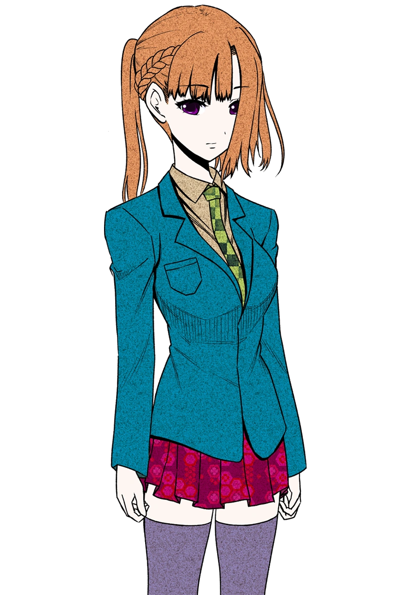
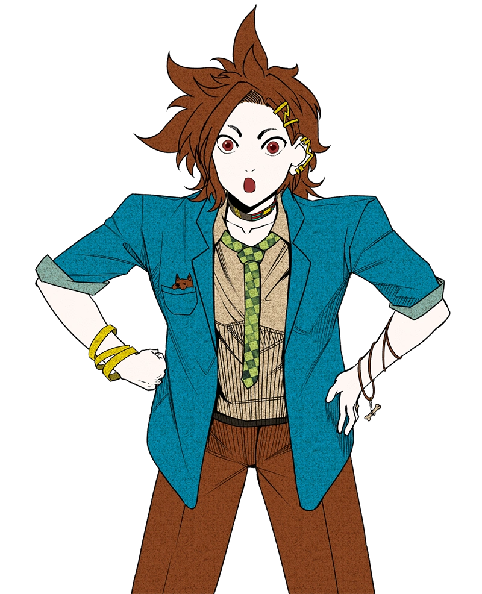
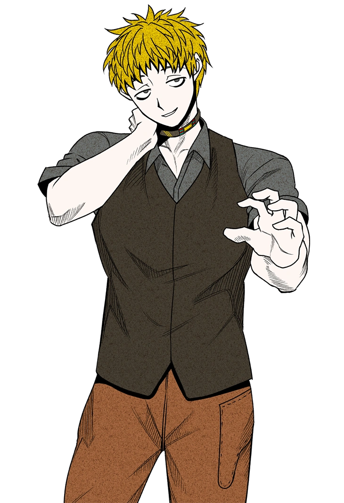
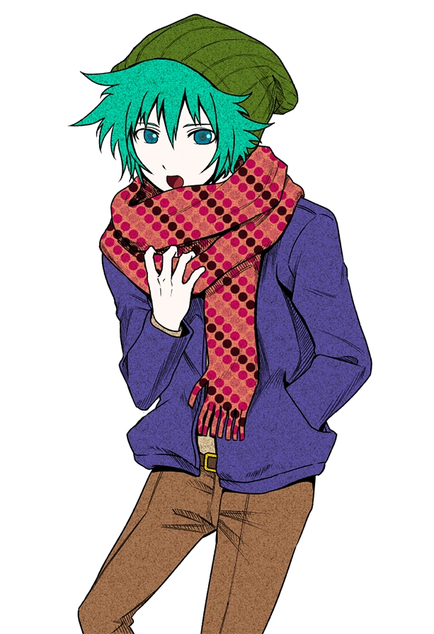
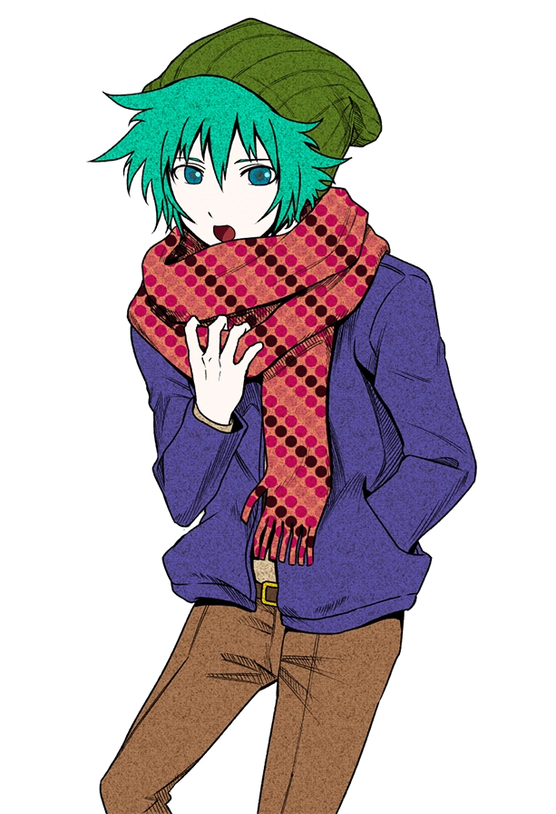
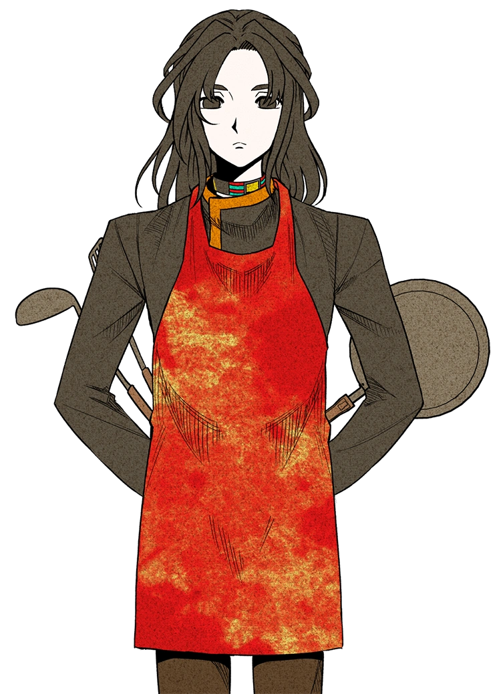

Sara
Sara Chidouin (Sara) is the main protagonist of "Your Turn To Die". She is the character that is controlled by you, the player. Her physical appearance consists of long orange hair tied into a ponytail, with her bangs in the front. She also has violet purple eyes. She also wears her school uniform. In terms of personality, Sara is a very strong-willed character who displays a stong sense of leadership within the entire cast of characters. She is the one that is relied on the most out of everybody. However, we see the weaker and more vulnerable side of her as the story progresses and some...incidents occur.

Joe

Jou Tazuna (Joe) is the deuteragonist of the series. He is Sara's best friend, and he is currently dating Sara's other good friend, Ryoko. His physical appearance consists of brown hair and eyes, as well as a piercing on his left ear with a matching hair clip. He is also wearing his school uniform. In his shirt pocket is a little dog keychain that Sara had gifted him. Personality wise, he is known as an outgoing person who worries about other people more than he does himself. This might change, however, once some things happen..
Keiji

Sou
 

Kai
